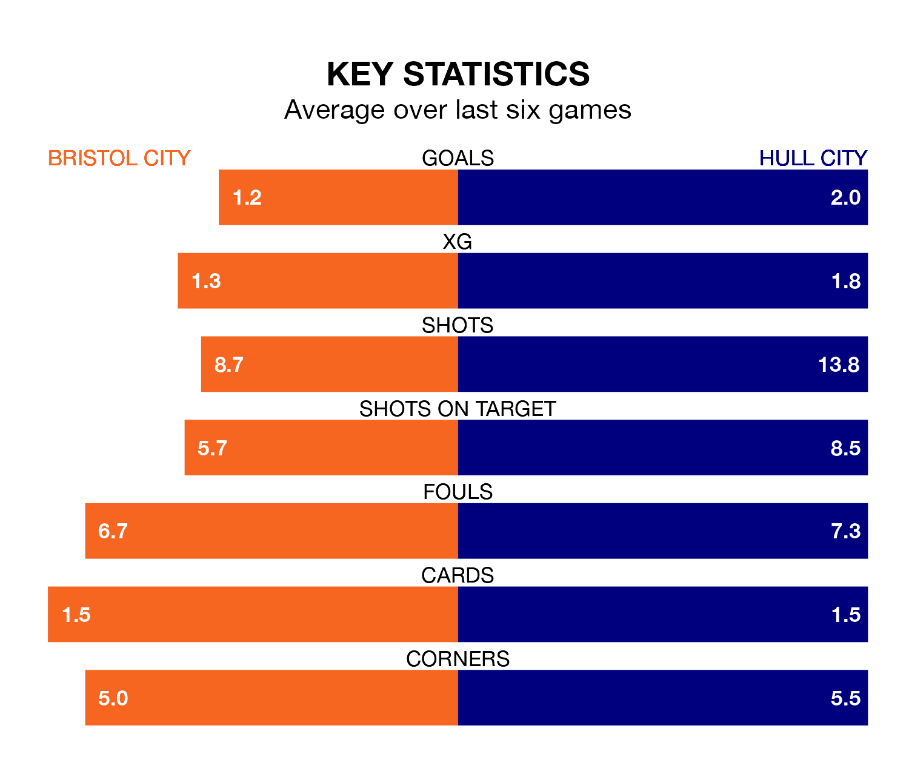

Bristol City host Hull City on Friday at Ashton Gate in the Championship.
In their last league match, on Saturday, Bristol City beat Sunderland 1-0 at home, with their goal scored by Tommy Conway.
Hull also won, 3-0 at home against Cardiff City, with Aaron Anthony Connolly, Ozan Tufan and Scott Twine on the scoresheet.
With 23 goals in 22 games so far this season, Bristol City are scoring at below the league average rate with 1.0 goals per game. But they are conceding fewer than average too, letting in 24 goals at a rate of 1.1 per game.
Hull, meanwhile, are above average scorers, with 1.5 goals per game, compared to a league average of 1.4. They have conceded 1.2 goals per game.
In the last 10 years, Bristol City and Hull have played each other on 14 occasions. Bristol City won six of them, Hull three, and they drew five times.
On average, the Robins scored 1.9 goals and the Tigers 1.6 in those matches.
Their last meeting was on August 25, when they played out a 1-1 draw.
Hull City are sixth in the table after 22 games, of which they have won 10 and drawn six, earning 36 points.
The Robins are eight places behind the Tigers in 14th, with eight wins and five draws putting them on 29 points.
With Max O’Leary between the sticks, the home side can rely on one of the league's safest pair of hands. He has kept six clean sheets in his 22 appearances this season in the Championship.
In the visitors' net, Ryan Allsop has five clean sheets in 16 games. He has conceded a goal every 76 minutes, 20% more often than the 90 minutes between goals for O’Leary.
Bristol City are in mixed form in the Championship, with two wins and a draw from their last six games.
With three wins and a draw over that period, Hull's form is better – they have taken 10 points from 18, compared to Bristol City's seven.
